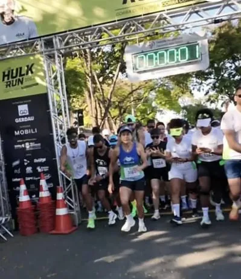

Eventos esportivos
A corrida inteira, do planejamento à premiação: corridas de rua, caminhadas e provas kids.
Veja como funciona ↓Para empresas, órgãos públicos e instituições
Planejamento, licenças, prevenção contra incêndio, estrutura e equipe no dia. Um só fornecedor, da primeira conversa à linha de chegada.
Veja o portfólio com mais de 60 corridas organizadas, ou a página institucional para órgãos públicos e conselhos.
Tudo o que um evento precisa para sair do papel com segurança, em um só fornecedor.

A corrida inteira, do planejamento à premiação: corridas de rua, caminhadas e provas kids.
Veja como funciona ↓Projetos e instalação de sistemas de prevenção, brigada de incêndio com bombeiros civis e controle de pânico.
Alvarás, autorizações e operação de trânsito.
Organização completa de feiras, exposições e eventos corporativos, com locação de estrutura.
Serviços de engenharia para estruturas e projetos.
Seleção e agenciamento de equipe para o dia do evento.
Gestão e planejamento de eventos.
Artes, redes sociais e comunicação com os inscritos.
Tudo para o seu evento, seja corrida, feira, congresso ou festa: tendas, gradis, pórtico de largada e chegada, sinalização de percurso e o que mais o evento precisar.
Corridas com a sua marca, produzidas de ponta a ponta pela Tardim Produções.
Uma prova com o nome da sua empresa, aberta ao público. Cuidamos do percurso, licenças, kit, arena, premiação e divulgação, como fizemos na Hulk Run.
Evento para funcionários e clientes: aniversário da empresa, ações de saúde e bem-estar, integração de equipes. Caminhada, 5 km, 10 km ou kids.
Coloque sua marca nas corridas do nosso calendário: kit do atleta, pórtico, arena, ativações no dia e divulgação nas redes.
Você define o objetivo. A Tardim Produções cuida de todo o resto.
Data, local, percursos, público e orçamento definidos com você.
Alvarás, autorizações da prefeitura e do trânsito, prevenção contra incêndio e chancela da Federação Mineira de Atletismo.
Plataforma de inscrição, camisetas, números de peito, medalhas e retirada de kit.
Artes da prova, redes sociais e comunicação com os inscritos.
Arena, largada e chegada, staff, brigada de incêndio, hidratação, cronometragem, premiação e shows.
Resultados, fotos e desmontagem de toda a estrutura.
Um só fornecedor, do primeiro contato à linha de chegada. Você não precisa contratar mais ninguém.
Quero organizar uma corridaPasso 1 · Simule
Escolha como você imagina a prova e veja tudo o que a Tardim Produções cuida para ela acontecer.
Passo 2 · Orçamento
Conte o básico sobre o evento. A mensagem chega pronta no WhatsApp da Tardim Produções, sem precisar explicar tudo de novo.